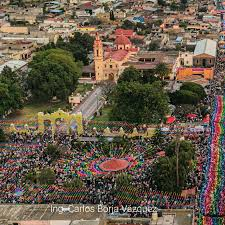

Mi Comunidad
Explorando la riqueza cultural de Juchitepec
Sobre Juchitepec
Juchitepec se ubica en la región oriente del Estado de México. Su nombre significa "el cerro de las flores".
Mapa interactivo de la región oriente del Estado de México.

Actividades económicas
Las principales fuentes de sustento son:
- Agricultura: Motor principal de la región.
- Comercio local: Mercados y tianguis.
- Negocios familiares: Emprendimientos locales.
- Trabajo externo: Empleo en municipios cercanos.